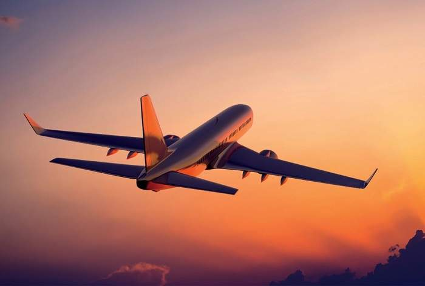
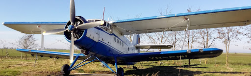
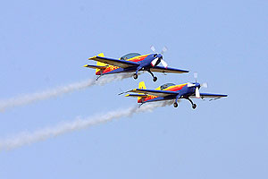
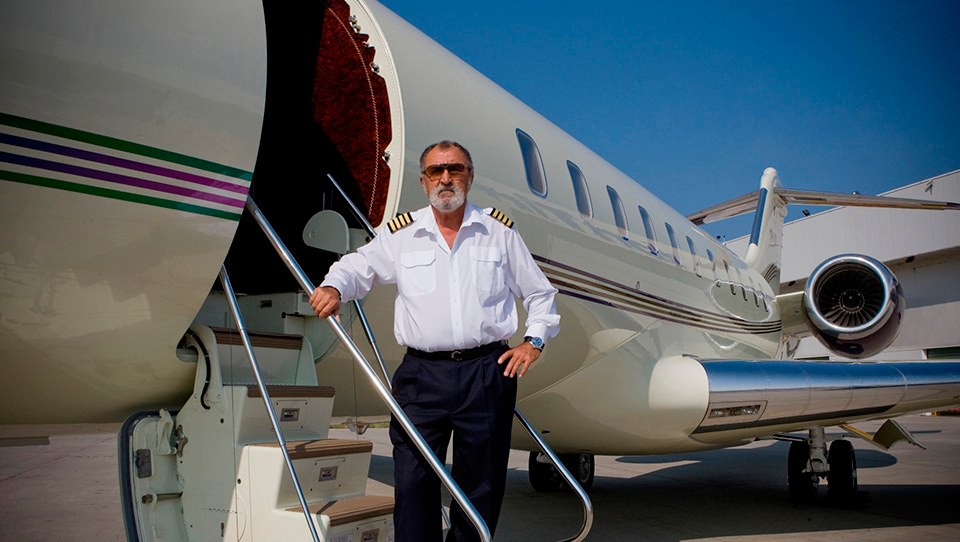

Aviatia civila
Aviația civilă este partea aviației care nu ține de aviația militară. Majoritatea țărilor din lume sunt membre ale Organizației Internaționale a Aviației Civile
(International Civil Aviation Organization – ICAO), în cadrul căreia colaborează pentru adoptarea de regulamente și recomandări pentru aviația civilă.
Activitățile aeronautice civile reprezintă totalitatea activităților legate de proiectarea, construcția, repararea, întreținerea, atestarea și operarea aeronavelor civile,
a aerodromurilor și a altor obiective de infrastructură de aeronautică civilă, de serviciile de navigație aeriană, de pregătirea personalului aeronautic civil, precum și a
activităților aeronautice civile conexe acestora.
În România aviația civilă este coordonată de Direcția Generală Aviație Civilă din Ministerul Transporturilor și Infrastructurii.
Aviația civilă se împarte în:
Aviația comercială:
- servește pentru transportul călătorilor și mărfurilor;
- aceste activități se fac în mod regulat;
|

|
Aviația generală:
1) Aviația utilitară:
- prestează diferite servicii de transport în domeniul sanitar (aviația sanitară) și turistic (aviația de agrement), respectiv prestează lucrări de tratamente chimice în agricultură și silvicultură (aviația agricolă);
- alte servicii prestate de aviația utilitară sunt de exemplu zboruri pentru utilizări meteorologice sau pentru supravegherea și sprijinirea traficului rutier;

|
2)Aviația sportivă:

- a cărei scop principal este recrutarea de tineri pentru a deveni piloți sau parașutiști;
- tot în cadrul aviației sportive sunt organizate și activitățile de zbor cu motor sau fără (planorism) pentru piloții sportivi, precum și activitățile de parașutism și aeromodelism;
|
3)Aviația privată:
- cuprinde zborurile efectuate de persoane care de obicei își pilotează propriul lor avion și care nu sunt plătite pentru asta;

- în general toate cheltuielile cu acest tip de zboruri sunt suportate de pilot;
|